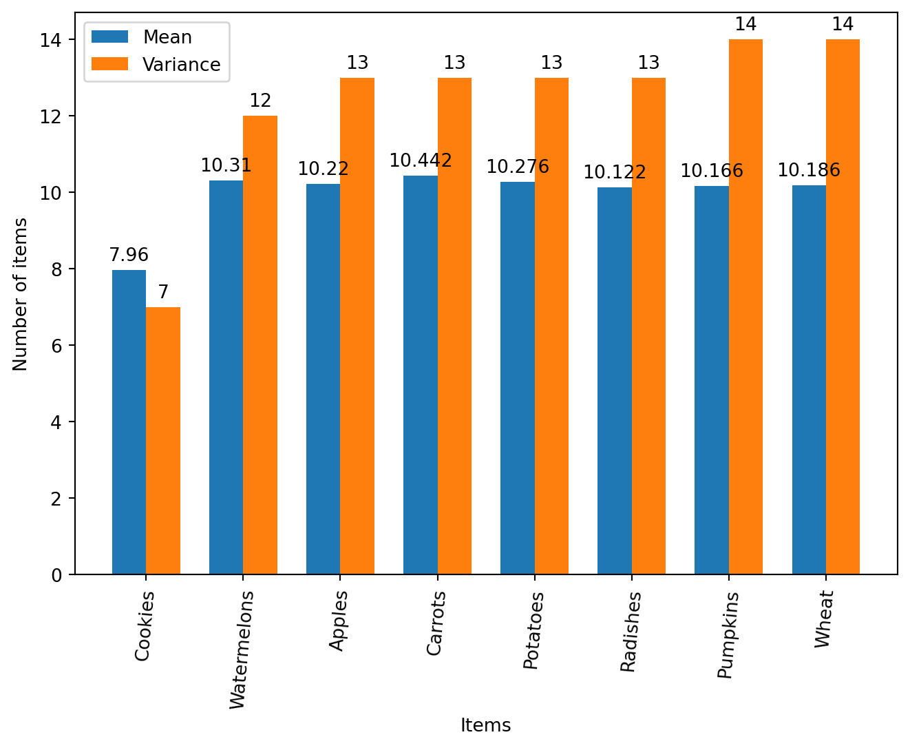

flowchart LR
A[compostable item] --> B{bone-meal}
C[compostable item] --> B{bone-meal}
D[compostable item] --> B{bone-meal}
E[compostable item] --> B{bone-meal}
In the hit game Minecraft, the composter block turns certain items into bone meal
These items include…
With enough items, the composter will will spit out bone-meal, a useful item to increase plant growth
However, the specific amount is random and different per item1
flowchart LR
A[compostable item] --> B{bone-meal}
C[compostable item] --> B{bone-meal}
D[compostable item] --> B{bone-meal}
E[compostable item] --> B{bone-meal}
Find the most efficient item to compost
Load libraries
import numpy as np
import pandas as pd
import matplotlib.pyplot as pltLoad csv files and merge them into one Data Frame
apple_df = pd.read_csv("data/Apple_v2.csv", nrows = 500)
cactus_df = pd.read_csv("data/Cactus_v2.csv", nrows = 500)
carrot_df = pd.read_csv("data/Carrot_v2.csv", nrows = 500)
cookie_df = pd.read_csv("data/Cookie_v2.csv", nrows = 500)
melon_df = pd.read_csv("data/Melon_v2.csv", nrows = 500)
oakleaf_df = pd.read_csv("data/Oakleaf_v2.csv", nrows = 500)
oaksapling_df = pd.read_csv("data/Oaksapling_v2.csv", nrows = 500)
potato_df = pd.read_csv("data/Potato_v2.csv", nrows = 500)
pumpkin_df = pd.read_csv("data/Pumpkin_v2.csv", nrows = 500)
pumpkinseed_df = pd.read_csv("data/Pumpkinseed_v2.csv", nrows = 500)
radish_df = pd.read_csv("data/Radish_v2.csv", nrows = 500)
radishseed_df = pd.read_csv("data/Radishseed_v2.csv", nrows = 500)
sugarcane_df = pd.read_csv("data/Sugarcane_v2.csv", nrows = 500)
wheat_df = pd.read_csv("data/Wheat_v2.csv", nrows = 500)
wheatseed_df = pd.read_csv("data/Wheatseed_v2.csv", nrows = 500)
df = pd.concat([apple_df, cactus_df, carrot_df, cookie_df, melon_df, oakleaf_df, oaksapling_df, potato_df, pumpkin_df, pumpkinseed_df, radish_df, radishseed_df, sugarcane_df, wheat_df, wheatseed_df], axis=1)Looking at the raw data frame, it’s quite hard to extract any meaningful data
print(df) Apples Cacti Carrots Cookies Watermelons OakLeaves OakSaplings \
0 10 21 11 8 9 19 13
1 10 20 8 7 10 25 14
2 10 14 9 8 9 19 24
3 11 15 12 9 11 24 29
4 12 7 13 7 11 14 23
.. ... ... ... ... ... ... ...
495 12 11 13 9 9 22 16
496 12 12 9 7 14 19 18
497 11 13 8 7 8 22 24
498 7 21 11 8 9 24 28
499 9 10 9 7 11 13 25
Potatoes Pumpkins PumpkinSeeds Radishes RadishSeeds Sugarcanes \
0 14 10 15 16 29 13
1 8 12 18 8 22 13
2 10 11 12 12 20 18
3 10 14 18 10 18 9
4 15 9 28 8 17 15
.. ... ... ... ... ... ...
495 7 10 38 7 14 13
496 7 10 26 8 22 10
497 8 12 17 11 15 10
498 10 12 16 10 14 10
499 10 12 16 15 20 13
Wheat WheatSeeds
0 13 11
1 11 14
2 9 14
3 9 13
4 13 21
.. ... ...
495 11 10
496 10 20
497 14 10
498 10 26
499 7 15
[500 rows x 15 columns]What if we graphed this data
The first thing I’d like to see is the mean of items required to make a piece of bone meal
mean_series = dict(df.mean())
mean_series = dict(sorted(mean_series.items(), key=lambda item: item[1]))
m_plant_types = mean_series.keys()
m_plant_values = mean_series.values()
plt.bar(m_plant_types, m_plant_values, color="blue")
plt.xticks(rotation = 85)
plt.xlabel("Minecraft Compositable Plants")
plt.ylabel("Mean of required composite materials")
plt.show()From this data, we can deduce that cookies, radishes, pumpkins, wheat, apples, potatoes, watermelons, and carrots are the most efficient in terms of items-per-bone-meal
What should also be considered is the variance of required materials, i.e. what is the range of required items to produce bone meal
To check the range, .nunique() is used, as it retrieves all unique values in the data frame per column
unique_series = dict(df.nunique())
unique_series = dict(sorted(unique_series.items(), key=lambda item: item[1]))
u_plant_types = unique_series.keys()
u_plant_variations = unique_series.values()
plt.bar(u_plant_types, u_plant_variations)
plt.xticks(rotation=85)
plt.xlabel("Minecraft Compositable Plants")
plt.ylabel("Variation of composite material required")
plt.show()From this graph, we can visually see that the same items have the lowest variance
So, what would the two graphs combined look like…
df_t = df[["Cookies", "Watermelons", "Apples", "Carrots", "Potatoes", "Radishes", "Pumpkins", "Wheat"]]
items_t = df_t.columns
means_t = df_t.mean()
uniques_t = df_t.nunique()
x_t = np.arange(len(items_t))
width = .35
fig, ax = plt.subplots()
m_rects = ax.bar(x_t - width/2, means_t, width, label="Mean")
u_rects = ax.bar(x_t + width/2, uniques_t, width, label="Variance")
ax.set_ylabel("Number of items")
ax.set_xlabel("Items")
ax.set_xticks(x_t, items_t)
ax.legend()
ax.bar_label(m_rects, padding=3)
ax.bar_label(u_rects, padding=3)
fig.tight_layout()
plt.xticks(rotation=85)
plt.show()
From this graph, it is easy to see that cookies are in fact the best item to compost
However, cookies are not very reproduceable; therefore, they wouldn’t actually be the best item to compost as the cost is simply too expensive
The item with the second lowest mean is the beetroot2, and I’d argue that it’s the best item to compost. Yes, watermelons, have a lower variance, but it’s mean is significantly higher in relation with competing items